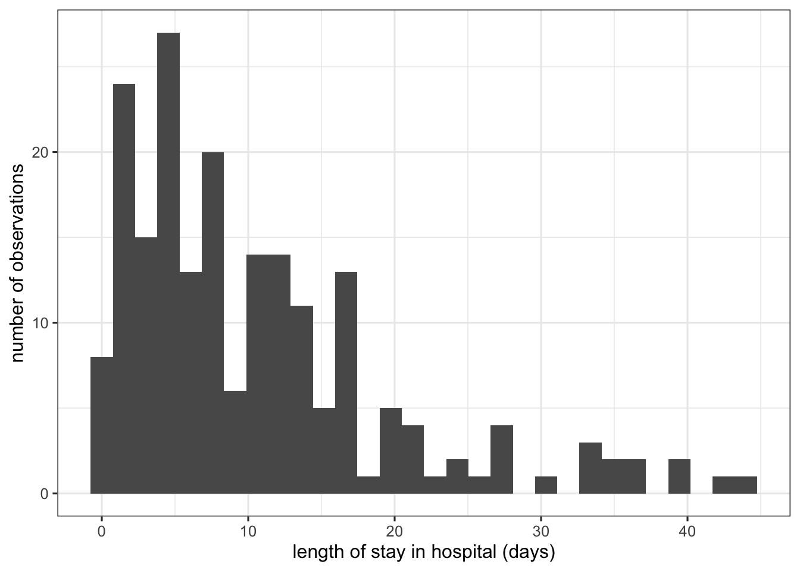

Code

Biostatistics Material for: Evidence-Based Coaching of Core Competencies in Epidemiology using the Framework of Randomized Controlled Trials
If you’ve been in a statistical methods course, you may remember that there were many methods presented. How do we know which one to pick?
For a relatively simple randomized clinical trial with
we have the following options:
| type of outcome | effect estimate | not adjusted | adjusted |
|---|---|---|---|
| continuous * | mean difference | \(t\)-test | linear regression |
| binary (yes / no) | odds ratio | \(\chi\)-square test | logistic regression |
| … | … | … | … |
Continuous outcomes usually need to be only approximately normally distributed! Even where a method make “assume normality”, as in say the t-test, “it is not in fact necessary for the distribution of the observed data to be normal, but rather the sample values should be compatible with the population (which they represent) having a normal distribution” (Altman and Bland 1995). A good example of an outcome which is most certainly not normally distributed is length of stay in the hospital

Selection of statistical methods is however usually more complicated than this! For example, we have not considered outcomes that are rates or survival times, more than 2 groups, clustered outcomes (either from cluster randomized trials or repeated measures from longitudinal studies), or crossover trials.
For more information on selection of statistical methods, see e.g. Chapter 34 in Kirkwood and Sterne (2003) (especially Table 34.3). A competent statistician should be on your study team, and can help you determine the most appropriate design and methods for your study.
If you need help finding a statistician at UZH, contact the Clinical Research Methods group at the EBPI, or see this list from the UZH Math department.